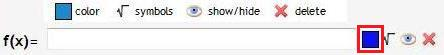
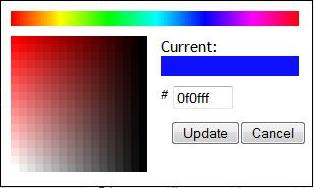
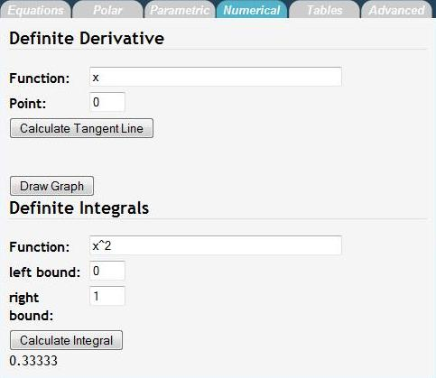

How to Make Stuff Work
Contents
Getting Started
When you first visit bCalc.net, this is what you'll see.
All graphing calculator functionality is organized into six tabs.
- Equations: This is the default tab, and where you’ll most likely spend most of your time. Here you can plot your normal, everyday rectangular equations.
- Polar: For more advanced math classes, here, you can plot polar equations in the form of r = r(t).
- Parametric: In this tab, you can plot parametric equations in the form of x = x(t), y = y(t).
- Numerical: For calculus classes, you can calculate definite derivatives, definite integrals, and plot tangent lines.
- Tables: Handy for statistics classes, you can create a table of values from an equation.
- Advanced: This is where you can customize options for the graph, such as the quality and animation.
Equations
This is probably where you want to be most of the time. Here, you can plot rectangular equations (the normal y=mx+b type equations).
To plot an equation, type the equation in the text field to the right of "f(x) =" and click "Draw Graph". The plot should appear on the graph to the right.
This is what you should see on the graph to the right:
Also, you can share your graph with your friends.
- To share your graph, click "Share Graph," and a URL will appear to the right of the button. You can remove the link by clicking the "X" to the right of the link.
You can plot multiple equations at the same time. By default, you will see three function fields. To add another function field, click the "+ add equation" button.
After clicking "+ equation":
Here is an example of multiple plots:
And the graph:
You can also generate a printer friendly page of your graph.
- To print, click the "Print" button.
- Here is a sample print page. The graph is the to the left and the equations are color coded to the right.
To the right of the text field are some options to customize each plot.
- Color. By default, each graph should have a different preset color. When you click "+add equation" you should get a different color than what is already plotted. 
- You can customize your color by clicking on the colored box. 
- The color picker pops out. To change color, click on the spectrum of colors on the top of the menu. Once you have selected the color you like, you can fine tune it by clicking on the box on the left. To save your color change, click "OK." Otherwise, click "Cancel."
- Symbols.
- Show/Hide.
- By default, your plot is shown on the graph, and is represented by the "Eye" symbol. Click on the "Eye" to hide the plot. An "X" will now be over the "Eye." To show the graph again, click on the "Eye" again.
- Hidden:
- Delete. When you click on this button, the plot will no longer be shown on the graph, and the equation field will disappear.
Basic Calculator
Below the function fields is the "Basic Calculator"
- Here, you can type in equations to evaluate. For example, typing "5+6" and clicking enter will return 11. You can also press "Enter" on your keyboard to evaluate equations.
- To scroll through what you previously typed, you can press the "Up Arrow" and "Down Arrow" on your keyboard.
- To clear the screen, you can either click “Click Screen" or type "clear" and press “Enter."
- In addition, you can type JavaScript in the console and create your own functions.
The Graph
- Reset: resets the view to the original view, centered at the origin, -8 < x < 8, -8 < y < 8
- Origin: centers the view to the origin of the graph
- +: zoom in; click to get a more detailed look at the graph
- -: zoom out; click to view more of the graph at once
- Bottom left corner—X,Y: shows the current x and y coordinates of the mouse position
- Toolbar Menu:
- Grab: default mode, you can move the view of graph by clicking and holding down your mouse on the graph and moving your mouse.
- Intersection: calculates the first intersection of the selected plots; to find the intersection:
- Click the Intersection button. A menu will appear to allow you to select which functions you would like the intersection of.
- Click and hold the mouse near the intersection, and drag the mouse to get the rectangular box around the intersection.
- The intersection will appear on the graph and in the Basic Calculator.
- Zero: calculates where the plot crosses the X-axis; to find the zero:
- Click the Zero button. A menu will appear for you to select which function to find the Zero of.
- Click and hold the mouse near the zero, and drag the mouse to get the rectangular box around the zero.
- The zero will appear on the graph and in the Basic Calculator.
- Max: calculates the maximum value in the enclosed interval; to find the max:
- Click the Maximum button. A menu will appear for you to select which function to find the maximum of.
- Click and hold the mouse at the beginning of the interval and drag the box until the end of the interval.
- The maximum will appear on the graph and in the Basic Calculator.
- Min: calculates the minimum value in the enclosed interval; to find the min:
- Click the Minimum button. A menu will appear for you to select which function to find the minimum of.
- Click and hold the mouse near the zero, and drag the mouse to get the box until the end of the interval.
- The minimum will appear on the graph and in the Basic Calculator.
- Trace: find the value of the function at a certain X value; to use trace:
- Position your mouse near the point you want the value of and click.
- The point will appear on the graph and in the Basic Calculator.

Polar
Here, we have two fields of input per equation:
- r(t) is the equation, and t field sets the range of the values of theta you’d like to plot
- To add more function fields, click "+ add polar equation."
- NOTE: use t as the variable, not x
- Plotting works the same way as rectangular equations.
- Type in your equation and set the bounds for t
- Click "Draw Graph"
Example:
The butterfly curve: e^sin(t) - 2cos(4t) + (sin((2t-pi)/24))^5
Graph:
Back to the Top
Parametric
For parametric equations, we have three fields of input:
- x(t), y(t), and t bounds
- To add more function fields, click "+ add parametric equation."
- NOTE: use t as the variable, not x
- As with rectangular and polar, plotting works pretty much the same
- Type in your equations for x(t), y(t) and set the bounds for t (theta)
- i.e 0 to 3.14 (pi approximation)
- Click "Draw Graph"
- Again, we have the same features as we do for polar and rectangular equations
Example: y(t) = sin(31t), x(t) = 10cos(31t)
Graph:
Back to the Top
Numerical
On the Numerical Section, we can calculate definite derivatives and integrals for you.
- Definite Derivative
- We have two fields:
- Function: the equation you want to find the derivative of
- Point: the point at which you want the derivative
- To use:
- Fill in the Function and Point fields
- Click "Calculate Tangent Line"
- An f(x) field pops up with the tangent line at the point
- You can graph this line on the graph, just like a normal rectangular equation
- The value of the derivative at the point is the slope of the tangent line (y = m*x+b; m is the derivative)
Example:
Graph:
NOTE: You will need to plot the function on the "Equations" tab separately from the "Numerical" tab.
- Definite Integrals
- There are three fields:
- Function: the equation you want to find the integral of
- Left Bound: the lower bound of the interval you want the integral of; a in the "integral equation"
- Right Bound: the upper bound of the interval you want the integral of; b in the "integral equation"
Example:
Back to the Top
Tables
Here is the Tables tab:
To add a function to the table:
- Type the function in the function field and then click "Add Column."
To add X-Values to the table, click "Add Row."
To set X-Values:
- Double click on the X-Value cell you’d like to change
- Type the new value you and press Enter.
Advanced
Here is the Advanced Tab:
Display
- Show:
- Toolbar: show/hide the Mouse Function menu on the top right
- Mouse Positions: show/hide the X,Y position of the mouse on the bottom left
- Gridlines: show/hide gridlines on the graph
- Navigation Tools: show/hide view options (Reset, Origin, etc) on the top left
- Graph Labels: show/hide axis labels
- Axis: show/hide the axis
- Extras
- Enable:
- Zoom Animation: turn off/on zooming animation. If you have an older computer, it is recommended you turn off the zoom animation.
- Multiple Trace: turn off/on multiple trace capability--calculates Y value for the X value clicked for all functions plotted.
- Max/Min/Zero/Intersection Point: after calculating max/min/zero/intersection, toggle whether to plot the calculated point on the graph
- Keep last trace point: toggles feature when in trace mode, clicking a point will cause a point to be drawn on the graph
- Toolbox help dialog: turn off/on pop up help messages for the graph functions
- Plot graph types separately: toggle whether to plot rectangular, polar, and parametric plots on the same graph